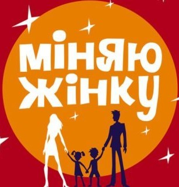

Міняю жінку

Ведучий: Андрій Бурлуцький, Сергій Могилевський (закадровий голос).
Жанр: Реаліті-шоу.
Країна: Україна.
Дата виходу: 8 березня 2010 р.
Кількість сезонів: 13
«Міняю жінку» — реаліті-шоу каналу 1+1. На цілий тиждень дві родини обмінюються мамами. Перші дні у новій сім’ї мама живе за її правилами — виховує дітей, доглядає за оселею, намагається порозумітися з чоловіком. А потім гостя впроваджує свої правила, і звичне життя родини зазнає карколомних змін.
Дуже цікава та емоційна передача, на якій можна і посміятися. Більш детально про передачу можна дізнатися за посиланням: https://uk.wikipedia.org/wiki/Міняю_жінку.